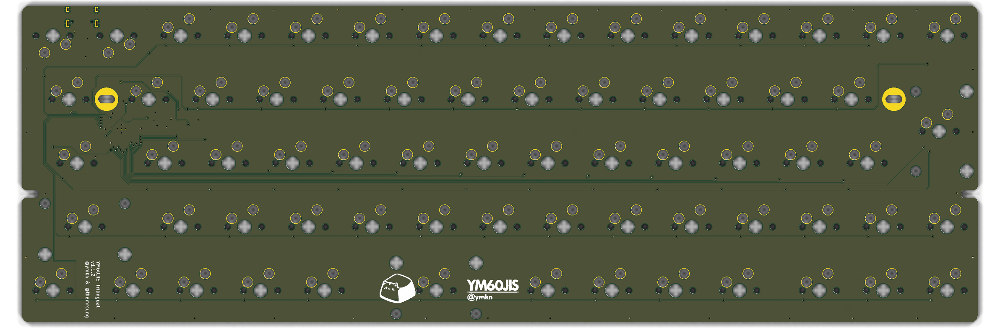
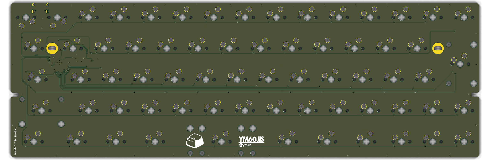

The original YM60JIS v1.1.1 board compared with this fork. Only the bottom row changed: every key is now 1u except a 2.5u spacebar, with two new switches for 英数 and かな. Drag across the render, or use the slider, to compare.


Before · v1.1.1After · v1.1.2
Switch side. The bottom row is the one that changed.
Bottom row
FnLang3OptCmd英数Space 2.5uかなCmdOptFn←↓→
12 × 1u keys and a 2.5u spacebar (about 46 mm, the HHKB size), with a 0.25u gap on each side of the modifier block.
New switches SW68 (英数, COL4) and SW69 (かな, COL7) with diodes D68 and D69. The board has 69 keys.
The 2.75u and 3u spacebar stabilizers are replaced by one 2u stabilizer.
The arrow keys did not move.
Board changes
Row 4 traces were redrawn by script in the same pattern as the rest of the board: switch → diode → via → ROW4 on the front copper, and each column drops from row 3 on the back copper.
The ROW4 trace from the MCU now drops beside the Fn switch, clear of its holes.
One GND via moved 2.75 mm right, off the new stabilizer hole.
The “YM60JIS” text logo moved left, off the かな switch.
The version label now reads YM60JIS Trilingual v1.1.2 @ymkn & @themrsung, in the gap between Fn and Lang3.
Design rule check
Check
Result
Unconnected pads (PCB)
0
New errors vs v1.1.1 (PCB)
none
New errors vs v1.1.1 (plate)
none
Schematic ERC, new electrical errors
none
The remaining warnings (library paths, duplicate stabilizer references, silkscreen overlaps) were already in the original board. The design has not been fabricated or tested.